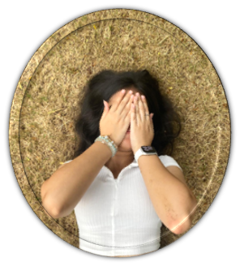
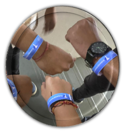

HΞLLФ!
I'm Tithi Shah, a passionate university student
with a keen interest in coding, technology, and
continuous learning. Currently pursuing my degree
in CSE CORE at VIT,Vellore.I spend most
of my time diving into the fascinating world of
programming and software development.
My journey into coding began when I wrote my
first line of code in high school and was instantly
hooked. Since then, I've been exploring various
programming languages and technologies. I'm
particularly fascinated by web development, data science,
AI/ML,etc and I'm always on the lookout for new
challenges and opportunities to grow my skills.

In addition to my academic pursuits, I am
actively involved in various university events
and organizations.I have participated in many events like
hackathons,E-Cell events,etc.
My dedication to excellence has been
recognized through several awards.My team secured 7th position
out of 150 teams in an event,
Futurepreneurs 9.0 held by E-Cell.
My team also got 17th position in a hackathon
organised by IEEE-CS during graVITas'23. Balancing
my studies with these extracurricular activities
has honed my leadership, teamwork, and time
management skills, all of which I believe are
crucial for success in both academic and
professional spheres.
During my school life,I received a trophy for academically standing first among all sections of class 8th[98%].